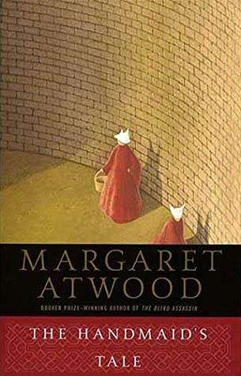

The Handmaid's Tale
|
Offred is a Handmaid in the Republic of Gilead. She may leave the home of the Commander and his wife once a day to walk to food markets whose signs are now pictures instead of words because women are no longer allowed to read. She must lie on her back once a month and pray that the Commander makes her pregnant, because in an age of declining births, Offred and the other Handmaids are valued only if their ovaries are viable. Offred can remember the years before, when she lived and made love with her husband, Luke; when she played with and protected her daughter; when she had a job, money of her own, and access to knowledge. But all of that is gone now . . .
Funny, unexpected, horrifying, and altogether convincing, The Handmaid's Tale is at once scathing satire, dire warning, and tour de force.
Ratings: 4.11/5
|